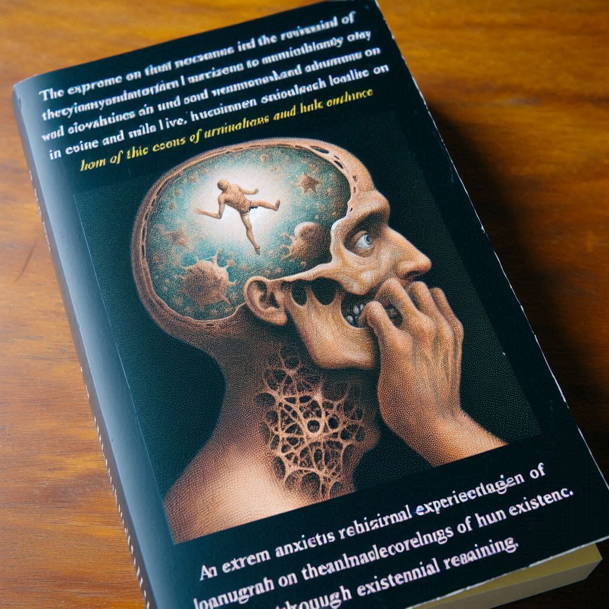

BOOK #2
목차
작가
장 폴 사르트르
출판일
1938년
감상평에 대한 AI그림
구토는 존재의 부조리를 깨닫게 되는 주인공의 내면을 그린 철학적 소설이다. 주인공 로콩탱이 일상 속에서 경험하는 극도의 불안은 실존주의적 사유를 통해 인간 존재의 본질에 대한 깊은 고민을 일으킨다. 이 책을 읽고 나니, 인간의 삶과 존재에 대해 다시 한 번 성찰하게 되었다.

감상평에 대한 AI평가
이 감상평은 철학적이고 사색적이며, 다소 불안한 분위기를 띠고 있습니다.
✨ 감정적 톤: 불안, 혼란, 깊은 성찰
✨ 분위기: 진지하고 철학적이며 실존적인 고민이 담김
✨ 주요 감정: 불안감, 존재에 대한 의문, 성찰